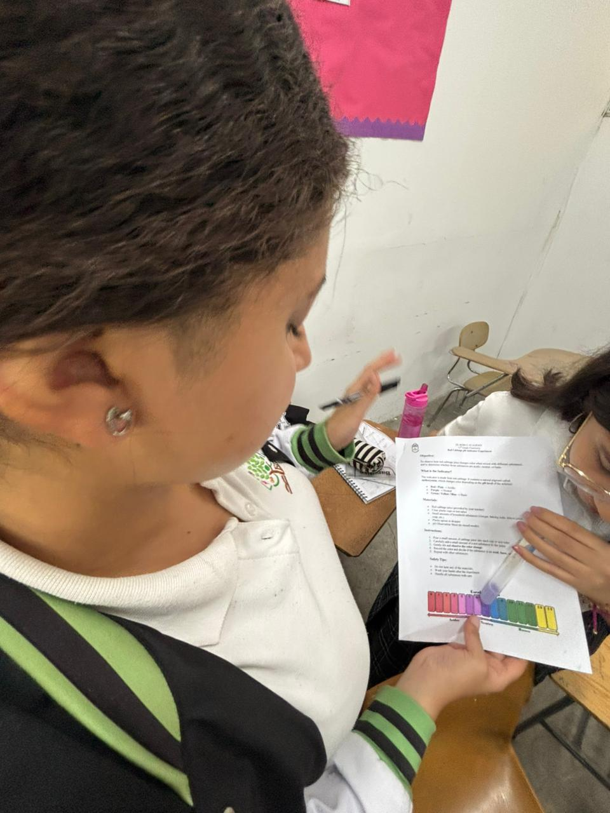
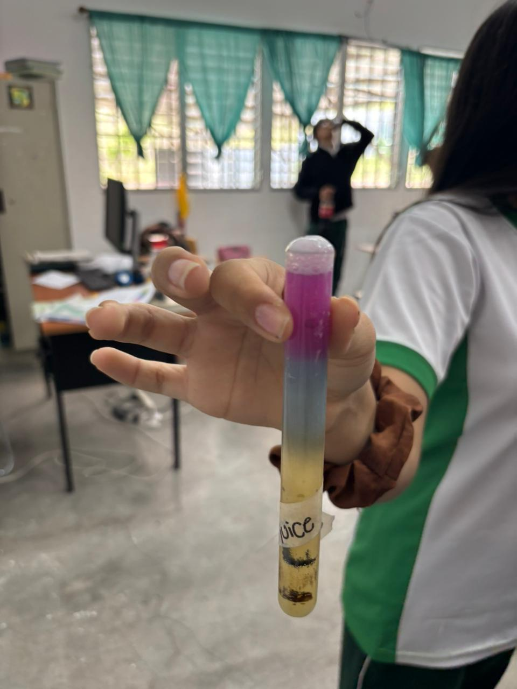

El Roble Academy
Chemistry Lab
By Tifany Estrada
Results


Conclusion
The pH scale experiment successfully demonstrated how various
common household substances can be classified as acids, bases,
or neutral solutions based on their pH values. Substances like lemon
juice and vinegar were found to be acidic, with low pH values,
while bleach and soap solution were strongly basic, with high pH values.